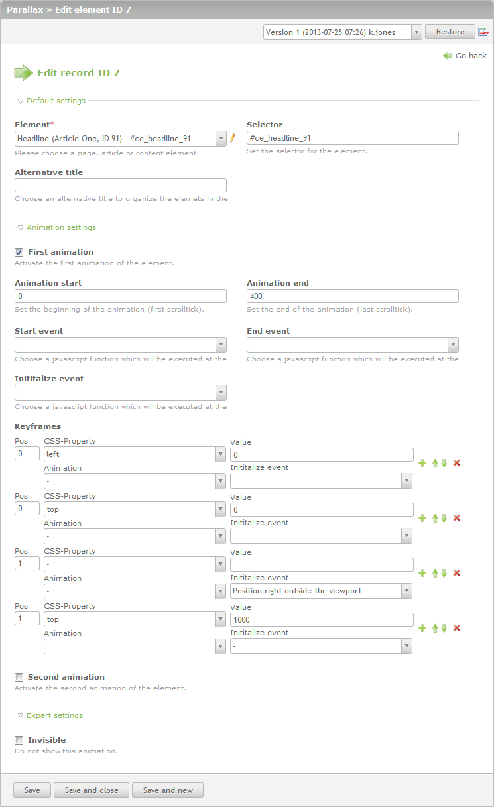

About Parallax
Parallax is based on jQuery and works just as you are used to it by Contao. Clear, slim, and easy to understand. At the beginning we support a great variety of browsers and operating systems.
You will need some experience with HTML(5) and CSS(3), but no knowledge of Javascript or jQuery. Parallax for Contao is slim in structure, but powerful in function. With an easy usability it gives your ideas and creativity a lot of room.
System requirements
Parallax for Contao requires some extensions or libraries, please install them always over the contao extension repository.
- Contao 2.9.x or higher
- jQuery 1.7.2 or higher (already included in Contao 3)
- MultiColumnWizard 3.2.0
Simple startup guide
- Install the extension
- Create your default theme and layout
- Enable "jQuery" in the layout
- Add pages to pagetree
- Add articles to page as many as you like to animate
- Add a few content elements under your articles
- Go to the parallax menu entry
- Add a new element, choose your root page and set "Activate scrollbar"
- Add another element and choose your regular page under "Animation page"
- Now add the containing articles in this page. Later you can play with the duration but for the first time set the value to 500
- The animation for the article is now active
- Animated elements should be positioned with "position:absolute". "position:relative" should only be used in exceptional cases.
- The height of 1000px for the article must be overwritten at the end with your own values!
Hint
The Parallax extension requires a certain URL constellation:
- No prefix in the URL (.html)
- No alias "index" on the first page
- No forwarding to the "index" page
Required HTML Markup
The parallax extension needs a defined set of elements, id's and classes in order to work properly. It is important that contao has the possibillity to dynamically generate id's and classes, so do not change these parts of the articles and content elements.
Example custom animation
Changelog
parallax
1.3.1
- Minor optimization for a better integration of the pro version
- Bugfix for Internet Explorer 8
1.3.0
- Better integration in Contao 3
- Optimized javascript performance
- Bugfix of wrong calculations in javascript
- Introduction of a new CSS class for content elements and articles #5
- Bugfix for Apple Safari and Magic Mouse #9
- Integration of Help Wizards for a better understanding of the animations
- General optimisation of articles with a dynamic height
- Bugfix of the xhtml templates
- Optimization of the height calculation in the combination of a horizontal slide and the last article
- Bugfix of the bouncing scrollbar
- Two new animations for positioning elements outside the viewport
- Implementation of new helper function for programmers to trigger the recalculation of the elements
- Reimplementation of the calculation of the last article in combination with a fixed header
- Optimization of the calculation for the maximum parallax resolution
- Minor bugfixes
1.2.0
- Full Contao 3.1 support
- Remove dependencies for external jquery extensions for Contao 3
- Bugfix for broken scrollbar if last article has a dynamic height
- Add user restriction in the relation between parallax and contao elements
- Remove info text and add wizard for editing related contao elements from parallax elements
- Add full fixed header support with new calculations, jump markers and more
- Split the configuration javascript into different modules for better performance, more flexibility and as preparation of the lite and pro version
- Remove Navigation, horizontal slides and resolution support for lite version
- Contao minifyHtml support for javascript configuration array
- Bugfix to remove id from copied parallax content elements
- Many little bugfixes and dca optimizations
1.1.0
- Adjustment for Contao 3.0
- Remove choosable template for navigation
- Bugfix for wrong height calculated - dynamic article with padding and box-sizing:border-box
1.0.1
- Optimizations for keyboard controls
- Add parallax stylesheet with all necessary frontend styles
- Add possibility to enable or disable loading gif
- Remove parallax class from body tag
- Removing scrollbar if parallax is abort
- Bugfixing keydown events in lower then IE8
parallax-deps (Pro version)
1.1.1
- Moved all classes of of the "parallaxImagePicker" from the DCA files to an own helper class to avoid error in Contao 3.1.4
- Optimization of the backend widgets for picking the background images
- Bugfix of the the inheritance of the paths for background images
- Bugfix of the class inheritance in the navigation classes
1.1.0
- Better integration in Contao 3
- Optimized javascript performance
- Bugfix of wrong calculations in javascript
- Reimplementation of the calculation of the last article in combination with a fixed header
- Implementation of new helper function for programmers to trigger the recalculation of the elements
- Minor bugfixes
1.0.0
- Full Contao 3.1 support
- Add full fixed header support with new calculations, jump markers and more
- Split the configuration javascript into different modules for better performance, more flexibility and as preparation of the lite and pro version
- Remove Navigation, horizontal slides and resolution support for lite version
- Add repository for pro modules with full parallax support like "parallaxHorizontal", "parallaxImagePicker", "parallaxNavigation" and "parallaxResolution"
- Contao minifyHtml support for javascript configuration array
- Many little bugfixes and dca optimizations
Screenshots
Parallax - Page tree

Parallax - Root site configuration

Parallax - Page configuration

Parallax - Article configuration

Parallax - Content element configuration
Article configuration